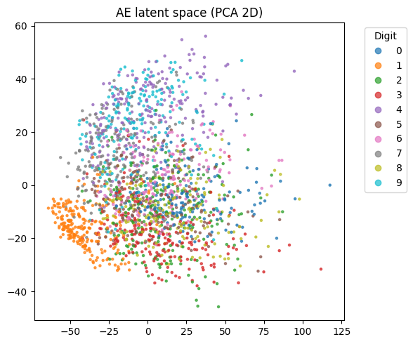

Comparative study · team project
Extended Digit Recognition on MNIST
A comparison of an MLP, a CNN, and an autoencoder-initialized classifier, examining representation learning, model capacity, and generalization.
My focus: architecture and inductive bias—how the model’s structure affects learning and generalization within a three-person study.
99.44% CNN97.82% MLP97.45% AE → classifier
Strict test accuracies recorded in the repository’s results table ↗.
PyTorch / MNIST / Representation learning
